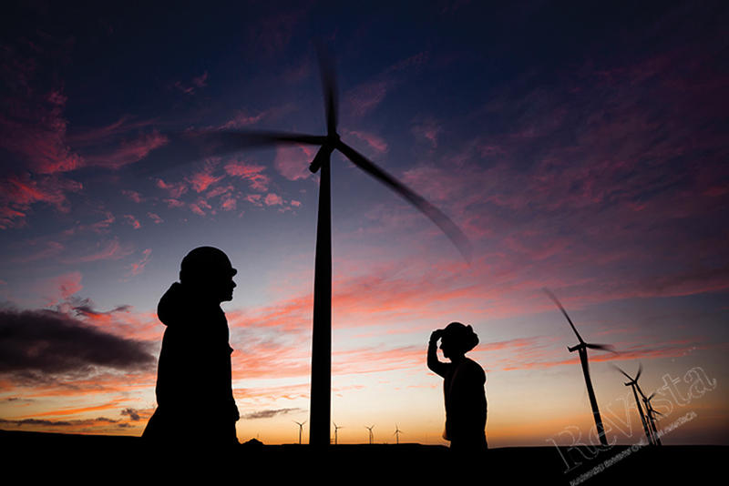

Energia Eólica en America Latina

La Energia Eólica tiene un enorme potencial en América Latina. Con su relativamente baja
densidad de población, grandes distancias y necesidades de energía en lugares remotos,
América Latina ofrece un entorno ideal para aprovechar la energía del viento.
Las necesidades de energía en lugares con mucho viento, pero aisladas o remotas, como las
islas del Caribe, las montañas y mesetas de los Andes y las cordilleras de Mesoamérica, así
como las vastas sabanas de la región (llanos, cerrado, Chaco y pampas), se pueden atender
más eficientemente por medio de turbinas eólicas que con cualquier otra alternativa. La
energía eólica es más fácil de adaptar a gran escala que la energía solar: en comparación con
los paneles solares o concentradores solares, las turbinas eólicas generan más electricidad
con respecto al área que ocupan, y esta diferencia as cada vez mayor, a medida que los
aerogeneradores aumentan de tamaño y eficiencia. Por lo tanto, la energía eólica puede ser
una tecnología más apropiada en zonas aisladas con necesidades energéticas importantes.
Si se planifican con cuidado, las instalaciones de turbinas eólicas tienen poco efecto adverso
sobre los ecosistemas, y en los grandes espacios deshabitados de la región, pueden tener
escasos o nulos impactos estéticos y de sonido. La energía eólica complementa muy bien
las redes eléctricas de la región, en las que predomina la generación hidroeléctrica, ya que la
generación hidroeléctrica puede responder fácilmente a la intermitencia de los vientos, en
contraste con la generación térmica, que es mucho menos flexible en general; y, al menos en
algunas partes de la región, los vientos son más fuertes durante la estación seca,
precisamente cuando la generación hidroeléctrica es más limitada. Por último, la condición
relativamente accesible de la tecnología eólica significa que puede ser fabricada en la región,
a diferencia de otros tipos de tecnologías energéticas. Brasil, por ejemplo, exige el uso de
materias primas locales y la fabricación local de instalaciones de energía eólica, y uno de los
principales fabricantes de la región es una empresa argentina, IMPSA.
No obstante, la energía eólica sigue siendo un recurso relativamente poco explotado en la
región, especialmente en relación con su enorme potencial. Para que este potencial se haga
realidad, la política energética tiene que superar la mentalidad que ha dominado el sector en
toda su historia en América Latina y el Caribe: la obsesión por la generación hidroeléctrica. A
pesar de los crecientes costos de construcción de grandes represas en lugares cada vez más
remotos, de más protestas de las comunidades indígenas afectadas por la construcción de
estas represas, y del creciente conocimiento de los costos ambientales de este tipo de
instalaciones, muchos gobiernos de la región siguen convencidos de que el aprovechamiento
del potencial hidroeléctrico restante es el mejor camino a seguir, y están gastando grandes
sumas de dinero en proyectos como el complejo del Río Madeira en Brasil. Esta mentalidad
retrógrada también afecta el funcionamiento de las redes nacionales de la región,
acostumbrado a la predictibilidad de la generación basada en represas con grandes
embalses de agua, en contraposición a la mayor intermitencia a corto plazo de la energía
eólica cuando se considera cada instalación por separado—y todo ello a pesar de la realidad
del cambio climático, que está alterando los patrones hidrológicos y haciendo que la
generación hidroeléctrica sea también menos predecible.
Muchos países de América Latina, después de haber reestructurado sus sectores de
electricidad para dar un papel más destacado a la propiedad privada de las instalaciones de
generación, también se enfrentan al reto de atraer inversión privada en energía eólica. Las
instalaciones de energía eólica se enfrentan a un tipo diferente de riesgo que las tecnologías
con una trayectoria más larga. En lugar de los riesgos hidrológicos o la volatilidad de los
precios de los combustibles, la energía eólica depende de un recurso, el viento, que es
menos conocido en toda la región, y que sigue sus propios patrones. Tal incertidumbre
disuade a los inversores privados. Así pues, es necesario desarrollar políticas innovadoras
para superar la reticencia de los inversores, tal vez siguiendo el modelo de las empleadas
con éxito en Europa, que ofrecen un precio fijo por cada unidad de energía generada.
Aunque los impactos ambientales y sociales son más leves que los de las grandes represas,
las ubicaciones idóneas para los parques eólicos pueden encontrarse en tierras indígenas, o
las líneas de transmisión pueden tener que cruzar estas tierras u otras áreas ambientalmente
sensibles. Algunos proyectos eólicos en México y en otros lugares ya han experimentado
reveses debido a la oposición local. Estos proyectos no son diferentes de otros tipos de
extracción de recursos, y como tales requieren la consulta y el consentimiento previo de las
comunidades afectadas, lo que a su vez puede implicar la necesidad de compartir algunos
de sus beneficios con estas comunidades. Los responsables políticos, promotores privados y
financiadores deben ser conscientes de este contexto más amplio y desarrollar protocolos y
normas adecuadas para involucrar a estos actores a satisfacción de todos.
En resumen, la energía eólica puede y debe desempeñar un papel importante en el futuro de
la energía en América Latina. Corresponde a los responsables políticos y al sector privado
hacer de este potencial una realidad.